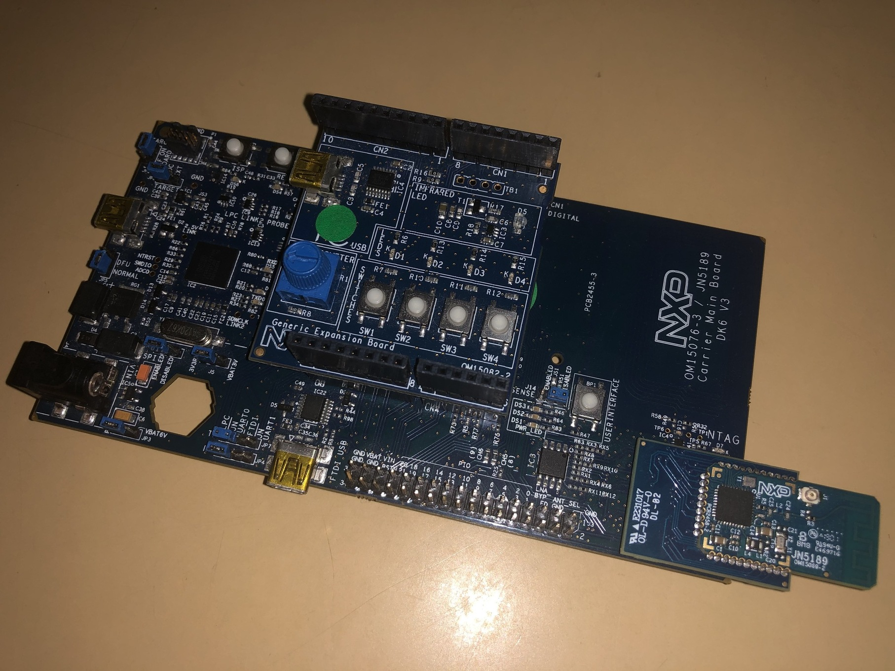

CHIP K32W061 Lock Example Application
Contents
CHIP K32W061 Lock Example Application#
The Project CHIP K32W061 Lock Example demonstrates how to remotely control a door lock device with one basic bolt. It uses buttons to test changing the lock and device states and LEDs to show the state of these changes. You can use this example as a reference for creating your own application.
The example is based on Project CHIP and the NXP K32W SDK, and supports remote access and control of a simulated door lock over a low-power, 802.15.4 Thread network.
The example behaves as a Project CHIP accessory, that is a device that can be paired into an existing Project CHIP network and can be controlled by this network.
Introduction#

The K32W061 lock example application provides a working demonstration of a connected door lock device, built using the Project CHIP codebase and the NXP K32W061 SDK. The example supports remote access (e.g.: using CHIP Tool from a mobile phone) and control of a simulated door lock over a low-power, 802.15.4 Thread network. It is capable of being paired into an existing Project CHIP network along with other Project CHIP-enabled devices.
The example targets the NXP K32W061 DK6 development kit, but is readily adaptable to other K32W-based hardware.
The CHIP device that runs the lock application is controlled by the CHIP controller device over the Thread protocol. By default, the CHIP device has Thread disabled, and it should be paired over Bluetooth LE with the CHIP controller and obtain configuration from it. The actions required before establishing full communication are described below.
The example also comes with a test mode, which allows to start Thread with the default settings by pressing a button. However, this mode does not guarantee that the device will be able to communicate with the CHIP controller and other devices.
SE051H Secure Element#
Deployment of this firmware configuration requires the K32W061 board setups using the K32W061 module board, SE051 Expansion board and Generic Expansion board as shown below:

The SE051H Secure Element extension may be used for best in class security and offloading some of the Project CHIP cryptographic operations. Depending on your hardware configuration, choose one of the options below (building with or without Secure Element). NOTE: the SE051H is a derivative of the SE051 product family (see http://www.nxp.com/SE051) including dedicated CHIP support in addition to the SE051 feature set. See the material provided separately by NXP for more details on SE051H.
Bluetooth LE Advertising#
In this example, to commission the device onto a Project CHIP network, it must be discoverable over Bluetooth LE. For security reasons, you must start Bluetooth LE advertising manually after powering up the device by pressing Button USERINTERFACE.
Bluetooth LE Rendezvous#
In this example, the commissioning procedure (called rendezvous) is done over Bluetooth LE between a CHIP device and the CHIP controller, where the controller has the commissioner role.
To start the rendezvous, the controller must get the commissioning information from the CHIP device. The data payload is encoded within a QR code, printed to the UART console and shared using an NFC tag. For security reasons, you must start NFC tag emulation manually after powering up the device by pressing Button 4.
Thread Provisioning#
Last part of the rendezvous procedure, the provisioning operation involves sending the Thread network credentials from the CHIP controller to the CHIP device. As a result, device is able to join the Thread network and communicate with other Thread devices in the network.
Device UI#
The example application provides a simple UI that depicts the state of the device and offers basic user control. This UI is implemented via the general-purpose LEDs and buttons built in to the OM15082 Expansion board attached to the DK6 board.
LED D2 shows the overall state of the device and its connectivity. Four states are depicted:
Short Flash On (50ms on/950ms off) The device is in an unprovisioned (unpaired) state and is waiting for a commissioning application to connect.
Rapid Even Flashing (100ms on/100ms off) The device is in an unprovisioned state and a commissioning application is connected via BLE.
Short Flash Off (950ms on/50ms off) The device is full provisioned, but does not yet have full network (Thread) or service connectivity.
Solid On The device is fully provisioned and has full network and service connectivity.
LED D3 shows the state of the simulated lock bolt. When the LED is lit the bolt is extended (i.e. door locked); when not lit, the bolt is retracted (door unlocked). The LED will flash whenever the simulated bolt is in motion from one position to another.
Button SW2 can be used to reset the device to a default state. A short Press Button SW2 initiates a factory reset. After an initial period of 3 seconds, LED2 D2 and D3 will flash in unison to signal the pending reset. After 6 seconds will cause the device to reset its persistent configuration and initiate a reboot. The reset action can be cancelled by press SW2 button at any point before the 6 second limit.
Button SW3 can be used to change the state of the simulated bolt. This can be used to mimic a user manually operating the lock. The button behaves as a toggle, swapping the state every time it is pressed.
Button SW4 can be used for joining a predefined Thread network advertised by a Border Router. Default parameters for a Thread network are hard-coded and are being used if this button is pressed.
The remaining two LEDs (D1/D4) and button (SW1) are unused.
Directly on the development board, Button USERINTERFACE can be used for enabling Bluetooth LE advertising for a predefined period of time. Also, pushing this button starts the NFC emulation by writing the onboarding information in the NTAG.
No expansion board#
In case the OM15082 Expansion board is not attached to the DK6 board, the functionality of LED D2 and LED D3 is taken over by LED DS2, respectively LED DS3, which can be found on the DK6 board.
Also, by long pressing the USERINTERFACE button, the factory reset action will be initiated.
Building#
In order to build the Project CHIP example, we recommend using a Linux distribution (the demo-application was compiled on Ubuntu 20.04).
Download K32W0 SDK 2.6.7.
Start building the application either with Secure Element or without
without Secure Element
user@ubuntu:~/Desktop/git/connectedhomeip$ export NXP_K32W0_SDK_ROOT=/home/user/Desktop/SDK_2_6_7_K32W061DK6/
user@ubuntu:~/Desktop/git/connectedhomeip$ ./third_party/nxp/k32w0_sdk/sdk_fixes/patch_k32w_sdk.sh
user@ubuntu:~/Desktop/git/connectedhomeip$ source ./scripts/activate.sh
user@ubuntu:~/Desktop/git/connectedhomeip$ cd examples/lock-app/nxp/k32w/k32w0
user@ubuntu:~/Desktop/git/connectedhomeip/examples/lock-app/nxp/k32w/k32w0$ gn gen out/debug --args="k32w0_sdk_root=\"${NXP_K32W0_SDK_ROOT}\" chip_with_OM15082=1 chip_with_ot_cli=0 is_debug=false chip_crypto=\"tinycrypt\" chip_with_se05x=0 chip_pw_tokenizer_logging=true mbedtls_repo=\"//third_party/connectedhomeip/third_party/nxp/libs/mbedtls\""
user@ubuntu:~/Desktop/git/connectedhomeip/examples/lock-app/nxp/k32w/k32w0$ ninja -C out/debug
user@ubuntu:~/Desktop/git/connectedhomeip/examples/lock-app/nxp/k32w/k32w0$ $NXP_K32W0_SDK_ROOT/tools/imagetool/sign_images.sh out/debug/
- with Secure element
Exactly the same steps as above but set chip_with_se05x=1 in the gn command.
Also, in case the OM15082 Expansion Board is not attached to the DK6 board, the build argument (chip_with_OM15082) inside the gn build instruction should be set to zero. The argument chip_with_OM15082 is set to zero by default.
In case that Openthread CLI is needed, chip_with_ot_cli build argument must be set to 1.
In case signing errors are encountered when running the sign_images.sh script install the recommanded packages (python version > 3, pip3, pycrypto, pycryptodome):
user@ubuntu:~$ python3 --version
Python 3.8.2
user@ubuntu:~$ pip3 --version
pip 20.0.2 from /usr/lib/python3/dist-packages/pip (python 3.8)
user@ubuntu:~$ pip3 list | grep -i pycrypto
pycrypto 2.6.1
pycryptodome 3.9.8
The resulting output file can be found in out/debug/chip-k32w0x-lock-example.
Known issues#
When using Secure element and cross-compiling on Linux, log messages from the Plug&Trust middleware stack may not echo to the console.
Manufacturing data#
Flashing and debugging#
Program the firmware using the official OpenThread Flash Instructions.
All you have to do is to replace the Openthread binaries from the above documentation with out/debug/chip-k32w0x-lock-example.bin if DK6Programmer is used or with out/debug/chip-k32w0x-lock-example if MCUXpresso is used.
Pigweed tokenizer#
The tokenizer is a pigweed module that allows hashing the strings. This greatly reduces the flash needed for logs. The module can be enabled by building with the gn argument chip_pw_tokenizer_logging=true. The detokenizer script is needed for parsing the hashed scripts.
Detokenizer script#
The python3 script detokenizer.py is a script that decodes the tokenized logs
either from a file or from a serial port. It is located in the following path
examples/platform/nxp/k32w/k32w0/scripts/detokenizer.py.
The script can be used in the following ways:
usage: detokenizer.py serial [-h] -i INPUT -d DATABASE [-o OUTPUT]
usage: detokenizer.py file [-h] -i INPUT -d DATABASE -o OUTPUT
The first parameter is either serial or file and it selects between decoding from a file or from a serial port.
The second parameter is -i INPUT and it must se set to the path of the file or the serial to decode from.
The third parameter is -d DATABASE and represents the path to the token database to be used for decoding. The default path is out/debug/chip-k32w0x-lock-example-database.bin after a successful build.
The forth parameter is -o OUTPUT and it represents the path to the output file where the decoded logs will be stored. This parameter is required for file usage and optional for serial usage. If not provided when used with serial port, it will show the decoded log only at the stdout and not save it to file.
Notes#
The token database is created automatically after building the binary if the argument chip_pw_tokenizer_logging=true was used.
The detokenizer script must be run inside the examples folder after a successful run of the scripts/activate.sh script. The pw_tokenizer module used by the script is loaded by the environment. An example of running the detokenizer script to see logs of a lock app:
python3 ../../../../../examples/platform/nxp/k32w/k32w0/scripts/detokenizer.py serial -i /dev/ttyACM0 -d out/debug/chip-k32w0x-lock-example-database.bin -o device.txt
Known issues#
The building process will not update the token database if it already exists. In case that new strings are added and the database already exists in the output folder, it must be deleted so that it will be recreated at the next build.
Not all tokens will be decoded. This is due to a gcc/pw_tokenizer issue. The pw_tokenizer creates special elf sections using attributes where the tokens and strings will be stored. This sections will be used by the database creation script. For template C++ functions, gcc ignores these attributes and places all the strings by default in the .rodata section. As a result the database creation script wont find them in the special-created sections.
If run, closed and rerun with the serial option on the same serial port, the detokenization script will get stuck and not show any logs. The solution is to unplug and plug the board and then rerun the script.
Tinycrypt ECC operations#
Building steps#
Note: This solution is temporary.
In order to use the tinycrypt ecc operations, use the following build arguments:
Build without Secure element (chip_with_se05x=0), with tinycrypt enabled (chip_crypto=tinycrypt) and with the
NXPmicro/mbedtlslibrary (mbedtls_repo=\"//third_party/connectedhomeip/third_party/nxp/libs/mbedtls\").
To disable tinycrypt ecc operations, simply build with chip_crypto=mbedtls
and with or without mbedtls_repo. If used with mbedtls_repo the mbedtls
implementation from NXPmicro/mbedtls library will be used.
Low power#
The example also offers the possibility to run in low power mode. This means that the board will go in a deep power down mode most of the time and the power consumption will be very low.
In order to build with low power support, the chip_with_low_power=1 must be provided to the build system. In this case, please note that the GN build arguments chip_with_OM15082 and chip_with_ot_cli must be set to 0 and chip_logging must be set to false to disable logging.
In order to maintain a low power consumption, the LEDs showing the state of the elock and the internal state are disabled. Console logs can be used instead. Also, please note that once the board is flashed with MCUXpresso the debugger disconnects because the board enters low power.
Power Measurement Tool can be used inside MCUXpresso for checking the power consumption pattern: Window -> Show View -> Other -> Power Measurement Tool. The configuration for this tool is the next one:
Also, please make sure that the J14 jumper is set to the ENABLED position and no expansion board is attached to the DK6. A view from this tool is illustrated below:
Please note that that the Power Measurement Tool is not very accurate and professional tools must be used if exact power consumption needs to be known.
Known issues#
Power Measurement Tool may not work correctly in MCUXpresso versions greater that 11.0.1.